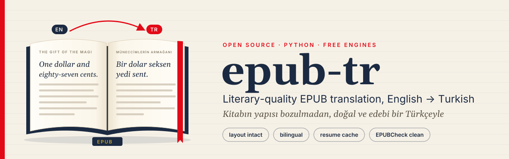

Yapıyı koruyan EPUB
ZIP düzeyinde yazım: özgün her girdi bayt bayt kopyalanır; yalnızca çevrilen XHTML, OPF ve NCX/nav etiketleri değişir. Çıktı EPUBCheck’ten girdi kadar iyi geçer.
epub-tr, EPUB kitapları doğal ve edebî Türkçeye çevirirken kitabı bozmaz: biçim, görseller, CSS, fontlar, içindekiler, üst veri ve iç bağlantılar korunur. Ücretli API anahtarı gerekmez.

--polish).ZIP düzeyinde yazım: özgün her girdi bayt bayt kopyalanır; yalnızca çevrilen XHTML, OPF ve NCX/nav etiketleri değişir. Çıktı EPUBCheck’ten girdi kadar iyi geçer.
Kararlı <seg id>’li parçalar, önceki paragrafları taşıyan bağlam, özel ad algılama (Della’nın) ve diyalog noktalaması.
--bilingual her özgün paragrafın altına çevirisini ekler: dil öğrenenler için ideal.
SQLite önbelleği: komutu yeniden çalıştırın, biten bölümler önbellekten gelir, yalnızca boşluklar modele gider.
Parça başına --fallback google,argos; OpenCode ücretsiz limitlerinde modeller arasında otomatik geçiş.
Ollama ya da tamamen çevrim dışı Argos ile kitabınız bilgisayarınızdan çıkmaz.
51 parça, 11.237 karakter. Ayrıntılar ve çıktılar depoda.
OpenCode ücretsiz katmanı IP başına limitli ve yavaştır (testte çağrı başına ~5 dk); bazı parçalar başarısız olabilir, aynı komutu sonra yeniden çalıştırın. Hızlı sonuç için --engine bing ya da google.
pip install epub-tr (Python 3.10+).
epub-tr engines --check makinenizde nelerin çalıştığını gösterir.
epub-tr inspect kitap.epub --show 10 neyin çevrileceğini gösterir.
epub-tr translate kitap.epub --engine opencode --polish --fallback bing
Son sürüm: v1.1.0. pipx install epub-tr da çalışır.
# çekirdek pip install epub-tr # + çevrim dışı Argos ve Bing/Yandex/ModernMT pip install "epub-tr[argos,extra]" # OpenCode CLI (ücretsiz LLM’ler) npm i -g opencode-ai
# en iyi kalite, ücretsiz epub-tr translate book.epub -o book.tr.epub --engine opencode --polish --fallback bing # yerel ve gizli epub-tr translate book.epub --engine ollama -m aya-expanse:8b # hızlı, iki dilli baskı epub-tr translate book.epub --engine google --bilingual -o book.en-tr.epub
Çevrim dışı kurulum için wheel ve kaynak paketi.
pip install ./epub_tr-1.1.0-py3-none-any.whl
git clone https://github.com/cumabozkurt/epub-tr.git && cd epub-tr python3 -m venv .venv && . .venv/bin/activate pip install -e ".[dev]" epub-tr translate samples/pg7256.epub -e google -o magi.tr.epub
Türkçesi olmayan bir kitabı kendi kişisel kopyanız için okunabilir Türkçeye çevirin.
İki dilli baskıyla her paragrafın altında çevirisi.
Sözlük tohumlama, ikinci cila geçişi ve --dump pairs.jsonl ile taslak üretip düzeltin.
--target ile başka hedef diller de çalışır.pip ile kurun, tek komutla çevirin; kitabın biçimi ve yazarın sesi yerinde kalsın.